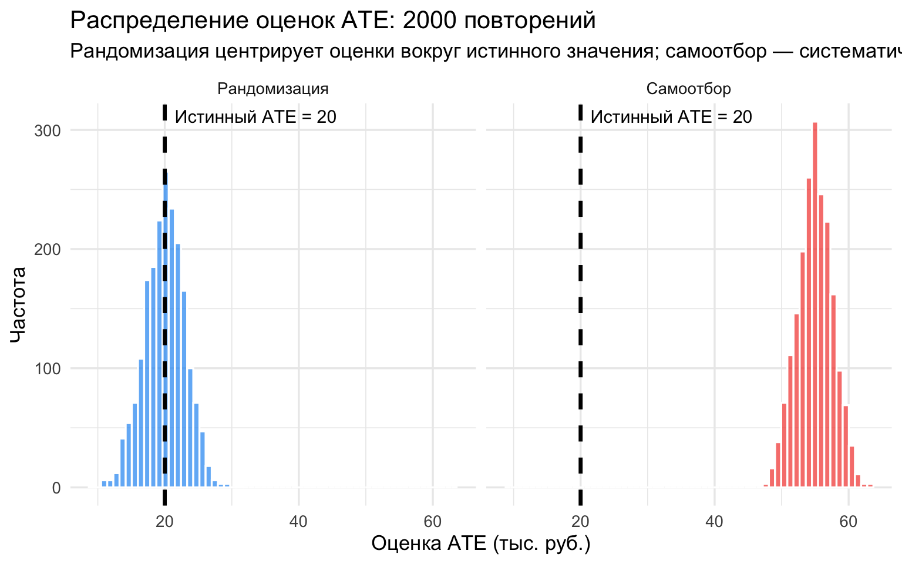
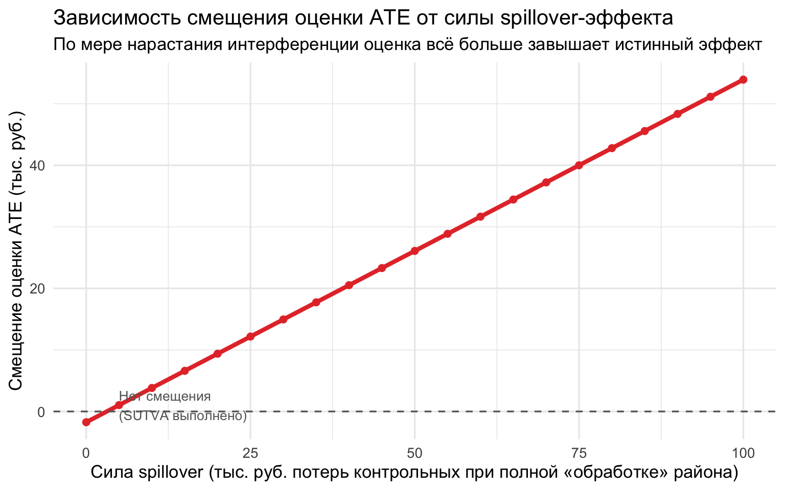
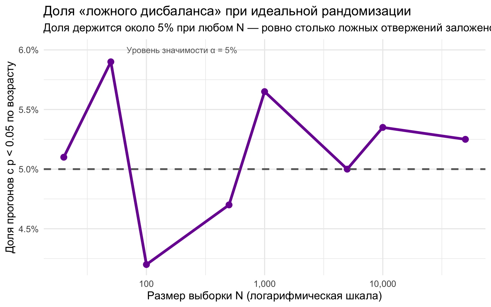

1 Введение в эксперименты
1.1 Что такое причинный вывод?
Причинный вывод (causal inference) отвечает на вопросы вида «что будет, если…?» (what if): что будет с выручкой фирмы, если она получит субсидию? Что будет со спросом, если поднять цену? Что будет с успеваемостью, если сократить размер класса? Такие вопросы принципиально отличаются от описательных («какова средняя выручка фирм, получивших субсидию?»): они спрашивают не о том, как устроен мир, а о том, как он изменился бы в ответ на вмешательство.
Любая задача причинного вывода состоит из двух частей:
\[\text{Причинный вывод} = \text{Идентификация} + \text{Оценка}\]
- Идентификация (identification) — формулирование и обоснование набора допущений, при которых эффект воздействия некоторой переменной имеет причинную интерпретацию. Это вопрос логики, а не данных: даже с бесконечной выборкой без корректных допущений причинный эффект восстановить нельзя.
- Оценка (estimation) — построение надёжного оценщика для интересующей величины и вычисление точечной оценки по конечной выборке. Это вопрос статистики: как извлечь максимум точности из имеющихся данных.
С этим разделением связана тройка терминов, которую важно не путать:
| Термин | Что это | Пример |
|---|---|---|
| Эстиманд (estimand) | Величина, которую мы хотим узнать, \(\tau\) | Средний эффект программы на выручку |
| Оценщик (estimator) | Алгоритм, превращающий данные в число | Разность средних, МНК (OLS) |
| Оценка (estimate) | Число, полученное на конкретной выборке, \(\hat\tau\) | «+18.3 тыс. руб.» |
Ошибки в эмпирических работах часто происходят на стыке этих понятий: исследователь аккуратно вычисляет оценку, не задумываясь, какой именно эстиманд его оценщик на самом деле оценивает — и оценивает ли он причинную величину вообще.
Откуда взялся причинный вывод: краткая история
- Философские истоки (XVIII–XIX вв.). Дэвид Юм заметил, что человек не наблюдает причинные связи непосредственно — лишь последовательности событий (Hume 1748). Джон Стюарт Милль разработал методы согласия и различия, заложив основы логического анализа причинности (Mill 1843).
- Статистическая революция (XX в.). Ежи Нейман предложил концепцию потенциальных исходов — первую строгую количественную модель причинности (Neyman 1923). Рональд Фишер обосновал рандомизированные контролируемые эксперименты (randomized controlled trials, RCT) как способ устранить систематические смещения (Fisher 1935).
- Экономика и квазиэксперименты (1970–1986). Орли Ашенфельтер применил метод разности разностей (difference-in-differences) к оценке программ занятости (Ashenfelter 1978). Роберт ЛаЛонд показал, что оценки эффекта программы трудоустройства с помощью МНК систематически расходятся с экспериментальными (LaLonde 1986) — это резко усилило интерес к экспериментальным и квазиэкспериментальным методам.
- Инструментальные переменные и LATE (1990-е). Джошуа Ангрист использовал лотерею призывных номеров как инструмент для оценки эффекта военной службы на доходы (Angrist 1990); Гвидо Имбенс и Дональд Рубин формализовали условия, при которых инструментальные переменные оценивают локальный средний эффект воздействия (local average treatment effect, LATE) (Imbens и Rubin 1997).
- Современный этап. Сложные экспериментальные дизайны, машинное обучение, доказательная политика (evidence-based policy).
Этот сдвиг в эмпирической экономике получил название революции достоверности (credibility revolution): доля статей NBER с обоснованной причинной идентификацией выросла с 4% в 1990 г. до 28% в 2020 г. (Garg и Fetzer 2025).
1.2 Фундаментальная проблема причинного вывода
Представьте: правительство запускает программу микрокредитования для малых предпринимателей в регионе. Исследователи хотят оценить, как участие в программе влияет на выручку бизнеса через год.
Введем следующие обозначения:
- \(T_i\) – бинарная переменная воздействия, то есть участия в программе микрокредитования (treatment variable): \[\begin{equation*} T_i = \begin{cases} 1, &\text{воздействие на объект i оказано}\\ 0, &\text{воздействие на объект i не оказано} \end{cases} \end{equation*}\]
- \(X_i\) – независимые переменные, то есть характеристики наблюдений (covariates)
- \(Y_{i1}\), \(Y_{i0}\) – потенциальные исходы (potential outcomes)
Казалось бы, всё просто: сравним выручку у тех, кто получил кредит, с теми, кто не получил. Но здесь кроется фундаментальная проблема:
Для каждого предпринимателя существуют два потенциальных исхода: \(Y_{i1}\) — выручка если получил кредит, и \(Y_{i0}\) — выручка если не получил. Эффект воздействия для конкретного человека: \(\tau_i = Y_{i1} - Y_{i0}\).
Наблюдаемые исходы \(Y_i\) отличаются от потенциальных исходов. Потенциальные исходы являются гипотетическими случайными величинами, когда наблюдаемые исходы являются фактическими случайными величинами. Наблюдаемые исходы являются функцией от потенциальных исходов:
\(Y_i = T_i \cdot Y_{i1} + (1-T_i) \cdot Y_{i0}\)
Действительно при \(T=1\) мы получим \(Y_i = Y_{i1}\), а при \(T=0\) получим \(Y_i = Y_{i0}\).
Мы можем наблюдать только один из двух исходов — тот мир, который реально случился. Второй навсегда остаётся контрфактическим.
Это и есть фундаментальная проблема причинного вывода (fundamental problem of causal inference) (Holland 1986): невозможно наблюдать одну и ту же единицу в двух состояниях мира одновременно. По сути это проблема пропущенных данных (missing data problem) — нам не хватает ровно половины таблицы, причём той половины, которую физически невозможно собрать.
Из этой формулировки следуют два важных вывода.
Во-первых, раз индивидуальный эффект \(\tau_i\) недоступен, приходится сравнивать разные единицы между собой — и всё качество такого сравнения определяется механизмом назначения (assignment mechanism): правилом, по которому одни единицы оказались под воздействием, а другие нет. В контролируемом эксперименте исследователь сам задаёт этот механизм ex ante — и потому точно знает, какие данные наблюдаются, а какие пропущены. Квазиэкспериментальные методы, напротив, пытаются ex post восстановить эндогенный механизм назначения, который исследователь не контролировал.
Во-вторых, раз распределение индивидуальных эффектов недоступно, будем довольствоваться средними величинами.
1.2.1 Средние эффекты: ATE, ATT и ATnT
- Средний эффект воздействия (average treatment effect):
\[\text{ATE} = \mathbb{E}[\tau_i] = \mathbb{E}[Y_{i1} - Y_{i0}] = \mathbb{E}[Y_{i1}] - \mathbb{E}[Y_{i0}]\]
это средняя разница между двумя сценариями по всем наблюдениям.
- Средний эффект для подвергшихся воздействию (average treatment effect on the treated):
\[\text{ATT} = \mathbb{E}[\tau_i \mid T_i = 1] = \mathbb{E}[Y_{i1} \mid T_i = 1] - \mathbb{E}[Y_{i0} \mid T_i = 1]\]
та же разница, но только для тех, кто воздействие получил. Обратите внимание: второе слагаемое, \(\mathbb{E}[Y_{i0} \mid T_i = 1]\), — это контрфактический исход участников, «что было бы с ними без программы».
- Средний эффект для не подвергшихся воздействию (average treatment effect on the non-treated):
\[\text{ATnT} = \mathbb{E}[\tau_i \mid T_i = 0] = \mathbb{E}[Y_{i1} \mid T_i = 0] - \mathbb{E}[Y_{i0} \mid T_i = 0]\]
Если эффект одинаков для всех, три величины совпадают. Но когда эффект гетерогенен и связан с тем, кто попадает в программу (например, в программу идут те, кому она больше помогает), ATE, ATT и ATnT — это три разных числа, и нужно ясно понимать, какое из них оценивает ваш дизайн и какое нужно для вашего вопроса о политике.
Ни одну из этих величин нельзя вычислить напрямую — в каждой участвует контрфактическое среднее. Далее сделаем симуляцию нашего гипотетического примера, чтобы увидеть фундаментальную проблему на практике.
Зачем нужны симуляции? Может лучше взять настоящие данные?
Симуляция – это искусственно созданный мир, где мы заранее задаём механизм порождения данных (data generating process) и потому знаем, каков истинный эффект.
Это полезно, когда мы хотим понять логику и свойства метода, а не бороться сразу со всеми сложностями реальных данных – то есть мы “изолируем” от мешающих факторов то, что хотим изучить.
В симуляциях можно по очереди “включать” отдельные проблемы: селекцию в тритмент, шум, гетерогенность эффектов, spillovers, attrition. Поэтому симуляции помогают увидеть, когда оценка работает хорошо, а когда начинает систематически ошибаться.
Иногда симуляция даже полезнее реальных данных: в реальных данных мы почти никогда не знаем истинный causal effect, а в симуляции знаем и можем сравнить его с тем, что оценила модель
Между полностью искусственными симуляциями и “сырыми” реальными данными есть промежуточный вариант: benchmark datasets, которые часто используют для отработки методов и сравнения подходов.
В науке есть две оси новизны:
- старый вопрос, новый язык (новый метод на хорошо изученной задаче)
- новый вопрос, старый язык (новая проблема, но проверенные методы)
Одновременное изменение и вопроса, и языка создаёт много неопределённости: непонятно, где именно “сидит” эффект.
Поэтому бенчмарки важны как “старые вопросы”: они позволяют тестировать новые методы на знакомой почве, прежде чем идти к совершенно новым сюжетам.
То есть у нас есть три режима обучения: полностью искусственный мир – симуляции, канонические учебные датасеты – вроде LaLonde или Titanic, и уже потом сложные реальные данные, где всё перемешано.
library(ggplot2) # визуализация
library(dplyr) # таблицы, группировки, summarise(), mutate()set.seed(42)
Про генерацию случайных чисел в R
В R существует несколько алгоритмов, позволяющих генерировать случайные числа (Random Number Generator (RNG), подробнее – ?RNGkind). По умолчанию используется Mersenne twister (Вихрь Мерсенна), поскольку он работает наиболее быстро. Однако все эти алгоритмы на самом деле детерминированы, поэтому генерируемые ими числа корректнее называть “псевдослучайными”.
Генератор псевдослучайных чисел начинает свою работу с определенной точки в пространстве возможных чисел. Эту точку принято называть начальным числом или seed. Начальное число – это число (или вектор), используемое для инициализации генератора псевдослучайных чисел. Если вы хотите получить одинаковые результаты с помощью генератора случайных чисел, важно установить начальное число. Для этого в R используется функция set.seed(). По умолчанию начальное число не установлено, если ничего не указать, то создается новое из текущего времени и идентификатора процесса на вашем устройстве. Следовательно, по умолчанию разные сеансы дают разные результаты моделирования.
Чтобы сделать результаты воспроизводимыми, используют установку начального числа.
N <- 100 # предпринимателей в выборке
# -------------------------------------------------------
# "Истина", которую мы в реальности НИКОГДА не знаем:
# потенциальные исходы для обоих миров
# -------------------------------------------------------
# Базовая выручка у каждого предпринимателя
# без программы — зависит от размера бизнеса и прочих факторов
Y0 <- round(rnorm(N, mean = 150, sd = 10), 1)
# Индивидуальный эффект кредита 20 тыс. руб.:
tau_i <- 20
# Потенциальный исход в "мире с кредитом"
Y1 <- Y0 + tau_i
# -------------------------------------------------------
# Случайное назначение в тритмент (получил кредит) / контроль
# -------------------------------------------------------
T_i <- rbinom(N, 1, prob = 0.5)
# Наблюдаемые исходы — "switching equation":
# Y_i = T_i * Y_{i1} + (1 - T_i) * Y_{i0}
Y_obs <- T_i * Y1 + (1 - T_i) * Y0
# -------------------------------------------------------
# Строим таблицу для модели Рубина: NA = контрфактический исход (не наблюдаем)
# -------------------------------------------------------
rubin_table <- tibble(
i = 1:N,
T_i = T_i,
Y0_true = Y0,
Y1_true = Y1,
tau_true = tau_i
) %>%
mutate(
# Переводим бинарный индикатор в текстовую метку
Группа = if_else(T_i == 1, "Тритмент (кредит)", "Контроль (нет кредита)"),
# Показываем только тот потенциальный исход, который реально наблюдается
Y0_obs = if_else(T_i == 0, Y0_true, NA_real_),
Y1_obs = if_else(T_i == 1, Y1_true, NA_real_)
) %>%
# Оставляем колонки в том порядке, в котором их удобно читать
select(i, Группа, Y0_obs, Y1_obs, tau_true)
# Выводим таблицу
# knitr::kable(
# rubin_table,
# col.names = c("i", "Группа", "Y₀ (без кредита)", "Y₁ (с кредитом)", "τᵢ (истинный)"),
# caption = "Таблица для модели Рубина: NA — контрфактические исходы, которые мы не наблюдаем",
# digits = 1
# )
rmarkdown::paged_table(rubin_table)# -------------------------------------------------------
# Сравниваем: что мы "знаем" vs. что наблюдаем
# -------------------------------------------------------
ATE_true <- rubin_table %>%
summarise(ATE_true = mean(tau_true)) %>%
pull(ATE_true)
ATE_naive <- tibble(T_i = T_i, Y_obs = Y_obs) %>%
group_by(T_i) %>%
summarise(mean_outcome = mean(Y_obs), .groups = "drop") %>%
summarise(ATE_naive = mean_outcome[T_i == 1] - mean_outcome[T_i == 0]) %>%
pull(ATE_naive)cat("Истинный ATE (среднее τ_i по всем):", round(ATE_true, 1), "тыс. руб.\n")Истинный ATE (среднее τ_i по всем): 20 тыс. руб.cat("Наивная оценка (разность средних): ", round(ATE_naive, 1), "тыс. руб.\n")Наивная оценка (разность средних): 18.9 тыс. руб.cat("Отклонение (selection bias): ", round(ATE_naive - ATE_true, 1), "тыс. руб.\n")Отклонение (selection bias): -1.1 тыс. руб.В таблице выше каждая строка — это один предприниматель. Обратите внимание: колонки \(Y_0\) и \(Y_1\) никогда не заполнены одновременно. NA — это не «данные не собраны», это принципиальная невозможность наблюдать оба исхода.
Поскольку рандомизация здесь случайная, наивная оценка близка к истинному ATE. В следующей симуляции мы увидим, что происходит при нарушении этого условия.
Вопросы для размышления:
- Почему колонка
tau_trueв реальном исследовании была бы полностью скрыта? - Как связана «проблема пропущенных данных» с тем, почему нельзя просто сравнить выручку до и после программы для одного предпринимателя?
- Что меняется, если вместо 100 предпринимателей у нас 100 000?
Возможные ответы
1. Почему tau_true в реальном исследовании была бы скрыта?
Потому что для каждого индивида мы наблюдаем только один из двух потенциальных исходов: либо \(Y_{i1}\), либо \(Y_{i0}\). Второй исход — контрфактический. Следовательно, \(\tau_i = Y_{i1}-Y_{i0}\) для отдельного \(i\) принципиально ненаблюдаем: нам всегда не хватает одного слагаемого.
2. Как связана «проблема пропущенных данных» с сравнением до/после?
Сравнение «до–после» для одного индивида подменяет контрфактический исход «что было бы без программы» простой динамикой во времени: трендом, шоками, сезонностью, обучением и т.д. Состояние «до» — это другая временная точка, а не альтернативный мир «в тот же момент без воздействия».
3. Что меняется при 100 000 индивидов?
Большая выборка снижает дисперсию оценок средних эффектов и делает ATE точнее, но не решает фундаментальную проблему: индивидуальный эффект \(\tau_i\) всё равно ненаблюдаем. Мы лучше оцениваем средние, но не видим оба мира для одного и того же объекта.
1.3 Четыре предпосылки внутренней валидности
Когда разность средних между группами можно интерпретировать как причинный эффект? Ответ даёт набор из четырёх предпосылок — их называют ограничениями исключения (exclusion restrictions):
| Предпосылка | Суть |
|---|---|
| SUTVA (stable unit treatment value assumption) | Потенциальные исходы единицы не зависят от воздействия на другие единицы; не существует скрытых версий воздействия |
| Статистическая независимость (statistical independence) | Механизм назначения не зависит от потенциальных исходов — достигается рандомизацией |
| Наблюдаемость (observability) | Все участники остаются в исследовании до конца; нет отсева (attrition) |
| Полное соблюдение протокола (compliance) | Назначенное воздействие совпадает с фактически полученным (\(T_i = Z_i\)) |
Только при выполнении всех четырёх условий разность средних между группами является внутренне валидной (internally valid) оценкой ATE. Разберём предпосылки по очереди; каждой соответствует своя симуляция.
1.3.1 Статистическая независимость
Формально: \(\{Y_{i1}, Y_{i0}\} \perp T_i\) — распределение единиц по группам не зависит от их потенциальных исходов. Именно это условие обеспечивает рандомизация (randomization): подбрасывание монетки по построению «не знает» ни способностей предпринимателя, ни его будущей выручки.
Из независимости следует, что группы сопоставимы до воздействия:
\[\mathbb{E}[Y_{i0} \mid T_i = 1] - \mathbb{E}[Y_{i0} \mid T_i = 0] = 0,\]
то есть контрольная группа честно отвечает на вопрос «что было бы с участниками без программы». Посмотрим, что происходит, когда это условие нарушается.
1.4 Рандомизация и смещение выборки
Продолжим сценарий с микрокредитованием, но теперь сделаем его более реалистичным: в реальном мире предприниматели сами решают, подавать ли заявку на кредит. Те, кто активнее, образованнее или уже имеет хорошие показатели — идут охотнее.
Это порождает смещение из-за самоотбора (selection bias): если мы просто сравним «взявших кредит» и «не взявших», наша оценка будет завышена — не потому что кредит так хорош, а потому что в программу пошли изначально более сильные предприниматели.
Насколько велика эта проблема и что с ней делает рандомизация?
Формально, наивная оценка раскладывается как (Cunningham 2021):
\[ \underbrace{\mathbb{E}[Y_1|T=1] - \mathbb{E}[Y_0|T=0]}_{\text{наивная оценка}} = \underbrace{\mathbb{E}[Y_1] - \mathbb{E}[Y_0]}_{\text{ATE}} + \underbrace{\mathbb{E}[Y_0|T=1] - \mathbb{E}[Y_0|T=0]}_{\text{Selection Bias}} + \underbrace{(1-\pi)(ATT-ATnT)}_{\text{гетерогенность}} \]
где \(\pi\) — доля получивших воздействие, а \(ATT\) и \(ATnT\) определены выше. Три слагаемых читаются так:
- ATE — интересующий нас эффект;
- смещение отбора (selection bias) — группы различались бы, даже если бы воздействия не было вовсе: \(\mathbb{E}[Y_0|T{=}1] \neq \mathbb{E}[Y_0|T{=}0]\);
- смещение из-за гетерогенности эффекта (heterogeneous treatment effect bias) — сила эффекта различается между участниками и неучастниками, и это различие взвешено на долю контрольной группы \((1-\pi)\).
Рандомизация обнуляет оба смещения сразу: из независимости \(\{Y_1, Y_0\} \perp T\) следует и \(\mathbb{E}[Y_0|T{=}1] = \mathbb{E}[Y_0|T{=}0]\) (нет смещения отбора), и \(ATT = ATnT\) (нет смещения из-за гетерогенности). Вернемся к нашему примеру и убедимся в этом.
set.seed(123)
# Функция для одного «прогона» симуляции
# На входе: размер выборки N и индикатор самоотбора
# На выходе: наивная оценка эффекта как разность средних исходов
simulate_selection_bias <- function(N, self_selection = FALSE) {
# 1. Генерируем ненаблюдаемую характеристику предпринимателя
# Можно интерпретировать её как способности, мотивацию, связи, опыт и т.д.
ability <- rnorm(N)
# 2. Строим потенциальные исходы
# Y0 — что было бы без кредита
# Y1 — что было бы с кредитом
Y0 <- 100 + 30 * ability + rnorm(N, sd = 15)
Y1 <- Y0 + 20 # истинный эффект одинаков для всех: +20
# 3. Задаём механизм назначения в тритмент
if (self_selection) {
# При самоселекции вероятность участия зависит от ability
prob_T <- plogis(-0.5 + 1.8 * ability)
} else {
# При честной рандомизации все имеют одинаковую вероятность попадания в программу
prob_T <- rep(0.5, N)
}
T_i <- rbinom(N, 1, prob_T)
# 4. Наблюдаемый исход зависит от того, в какую группу попал участник
sim_data <- tibble(ability = ability, Y0 = Y0, Y1 = Y1, T_i = T_i) %>%
mutate(Y_obs = if_else(T_i == 1, Y1, Y0))
# 5. Возвращаем наивную оценку: средний исход treated минус средний исход control
sim_data %>%
group_by(T_i) %>%
summarise(mean_outcome = mean(Y_obs), .groups = "drop") %>%
summarise(estimate = mean_outcome[T_i == 1] - mean_outcome[T_i == 0]) %>%
pull(estimate)
}# Запускаем 2000 повторений каждого сценария для 500 предпринимателей
reps <- 2000
N <- 500
est_random <- replicate(reps, simulate_selection_bias(N, self_selection = FALSE))
est_selection <- replicate(reps, simulate_selection_bias(N, self_selection = TRUE))cat("=== Истинный ATE = 20 тыс. руб. ===\n\n")=== Истинный ATE = 20 тыс. руб. ===cat("Сценарий 1 — рандомизация:\n")Сценарий 1 — рандомизация:cat(" Среднее оценок: ", round(mean(est_random), 2), "\n") Среднее оценок: 19.97 cat(" Ст. отклонение: ", round(sd(est_random), 2), "\n\n") Ст. отклонение: 3 cat("Сценарий 2 — самоотбор:\n")Сценарий 2 — самоотбор:cat(" Среднее оценок: ", round(mean(est_selection), 2), "\n") Среднее оценок: 54.98 cat(" Ст. отклонение: ", round(sd(est_selection), 2), "\n") Ст. отклонение: 2.62 cat(" Среднее смещение:", round(mean(est_selection) - 20, 2), "\n") Среднее смещение: 34.98 df_plot <- tibble(
estimate = c(est_random, est_selection),
scenario = rep(c("Рандомизация", "Самоотбор"), each = reps)
)
ggplot(df_plot, aes(x = estimate, fill = scenario)) +
geom_histogram(bins = 60, alpha = 0.7, position = "identity", color = "white") +
geom_vline(xintercept = 20, color = "black", linewidth = 1.2, linetype = "dashed") +
annotate("text", x = 21.5, y = Inf, label = "Истинный ATE = 20",
hjust = 0, vjust = 1.5, size = 4) +
scale_fill_manual(values = c("Рандомизация" = "#2196F3", "Самоотбор" = "#F44336")) +
facet_wrap(~ scenario) +
labs(
title = "Распределение оценок ATE: 2000 повторений",
subtitle = "Рандомизация центрирует оценки вокруг истинного значения; \n самоотбор — систематически завышает",
x = "Оценка ATE (тыс. руб.)",
y = "Частота",
fill = "Сценарий"
) +
theme_minimal(base_size = 13) +
theme(legend.position = "none")
При рандомизации распределение оценок сосредоточено вокруг 20 — истинного значения ATE. При самоотборе центр сдвинут вправо: мы «видим» эффект больше реального, потому что в программу пошли изначально более сильные предприниматели.
Именно это объясняет, почему эксперименты со случайным назначением воздействия являются «золотым стандартом» идентификации.
Вопросы для размышления:
- Почему при рандомизации дисперсия оценок больше нуля, хотя мы знаем «истину»?
- Что произойдёт с selection bias, если мы будем контролировать
abilityв регрессии? (Подсказка: ability ненаблюдаема — что это означает на практике?) - В каком направлении смещение при самоотборе, если в программу идут самые слабые предприниматели (например, в программу помощи банкротам)?
Возможные ответы
1. Почему при рандомизации дисперсия оценок больше нуля?
Потому что даже при идеальной рандомизации мы работаем с конечной выборкой. Выборочные средние случайно колеблются вокруг истинного ATE, поэтому оценка остаётся шумной, хотя и несмещённой.
2. Что будет, если контролировать ability в регрессии?
Если ability измерен точно и включён корректно, такая регрессия может убрать ту часть selection bias, которая идёт через ability. Но если ability ненаблюдаем или измеряется грубо, смещение полностью не исчезает — именно поэтому рандомизация лучше простой регрессии с контролями.
3. Что, если в программу идут самые слабые?
Тогда смещение может стать отрицательным: наивная оценка будет занижать истинный эффект, потому что treated-группа изначально хуже контроля. В пределе можно получить даже отрицательную наивную оценку при положительном истинном ATE.
1.5 Нарушение SUTVA: интерференция
SUTVA (stable unit treatment value assumption — предположение о стабильности значения воздействия для единицы) — вторая из четырёх предпосылок. Она состоит из двух частей:
- Отсутствие интерференции (no interference): потенциальные исходы единицы \(i\) не зависят от того, какое воздействие назначено другим единицам. Записывая \(Y_{i1}\) и \(Y_{i0}\), мы неявно предполагаем, что исход \(i\) определяется только её собственным \(T_i\) — иначе потенциальных исходов было бы не два, а по одному на каждую комбинацию воздействий во всей выборке.
- Отсутствие скрытых версий воздействия (no hidden versions of treatment): каждому значению \(T_i\) соответствует ровно одна версия воздействия. Если участники «одной и той же» программы фактически получают разные по содержанию и интенсивности услуги, запись \(Y_{i1}\) теряет смысл — «единица» воздействия у всех разная.
Важная особенность SUTVA: её невозможно проверить статистическими тестами — в неё можно только верить, а обеспечивается она грамотным дизайном эксперимента.
Вокруг первой части SUTVA существует целая иерархия терминов, которые часто путают:
| Термин | Уровень | Суть |
|---|---|---|
| Интерференция (interference) | Самый общий | Сам факт, что исход единицы зависит не только от её собственного воздействия; нарушение части SUTVA «no interference» |
| Внешние эффекты воздействия (spillover effects) | Частный случай | Причинный эффект воздействия одних единиц на исходы других; обычно задаётся через соседей, сеть, кластер или долю получивших воздействие вокруг |
| Эффекты окружения (peer effects) | Язык социальной литературы | Тот же класс межъюнитных зависимостей, но с акцентом на социальный канал: одноклассники, коллеги, соседи |
Представьте программу субсидирования малого бизнеса в районе города. Случайно выбранные магазины получают субсидию на маркетинг и привлечение клиентов. Но клиентский поток не создаётся из воздуха — он перераспределяется. Если субсидированные магазины переманивают покупателей у соседей-контрольных, то у тех снижается выручка именно из-за программы, а не по собственным причинам.
Это spillover-эффект — прямое нарушение SUTVA. В результате контрольная группа «страдает», эффект как бы перетекает и в нее, уменьшая там зависимую переменную, и тогда наивная оценка завышает эффект программы.
set.seed(99)
N <- 300 # магазинов в районе
# Собираем данные в tibble, чтобы дальше работать через mutate() и summarise()
sim4_data <- tibble(
T_i = rbinom(N, 1, 0.5)
) %>%
mutate(
share_treated = mean(T_i),
# Сценарий A: SUTVA выполняется — нет интерференции
Y0_clean = rnorm(N, mean = 500, sd = 80),
Y1_clean = Y0_clean + 60,
Y_obs_clean = if_else(T_i == 1, Y1_clean, Y0_clean),
# Сценарий B: контрольные магазины теряют клиентов из-за соседей из treated-группы
spillover_strength = 40,
Y0_spill = Y0_clean - spillover_strength * share_treated,
Y_obs_spill = if_else(T_i == 1, Y1_clean, Y0_spill)
)
# -------------------------------------------------------
# Оценки
# -------------------------------------------------------
ATE_clean <- sim4_data %>%
group_by(T_i) %>%
summarise(mean_outcome = mean(Y_obs_clean), .groups = "drop") %>%
summarise(val = mean_outcome[T_i == 1] - mean_outcome[T_i == 0]) %>%
pull(val)
ATE_spill <- sim4_data %>%
group_by(T_i) %>%
summarise(mean_outcome = mean(Y_obs_spill), .groups = "drop") %>%
summarise(val = mean_outcome[T_i == 1] - mean_outcome[T_i == 0]) %>%
pull(val)
cat("=== Истинный эффект субсидии = 60 тыс. руб. ===\n\n")=== Истинный эффект субсидии = 60 тыс. руб. ===cat(sprintf("Оценка ATE без spillover (SUTVA ок): %.1f тыс. руб.\n", ATE_clean))Оценка ATE без spillover (SUTVA ок): 58.3 тыс. руб.cat(sprintf("Оценка ATE со spillover (SUTVA !): %.1f тыс. руб.\n", ATE_spill))Оценка ATE со spillover (SUTVA !): 80.5 тыс. руб.cat(sprintf("Завышение из-за нарушения SUTVA: %.1f тыс. руб.\n",
ATE_spill - ATE_clean))Завышение из-за нарушения SUTVA: 22.3 тыс. руб.# -------------------------------------------------------
# Как оценка смещается в зависимости от силы spillover?
# -------------------------------------------------------
spillover_vals <- seq(0, 100, by = 5)
bias_vals <- sapply(spillover_vals, function(sp) {
sim4_data %>%
mutate(
Y0_tmp = Y0_clean - sp * share_treated,
Y_obs = if_else(T_i == 1, Y1_clean, Y0_tmp)
) %>%
group_by(T_i) %>%
summarise(mean_outcome = mean(Y_obs), .groups = "drop") %>%
summarise(bias = mean_outcome[T_i == 1] - mean_outcome[T_i == 0] - 60) %>%
pull(bias)
})
df_bias <- tibble(spillover = spillover_vals, bias = bias_vals)
ggplot(df_bias, aes(x = spillover, y = bias)) +
geom_line(color = "#E53935", linewidth = 1.5) +
geom_point(color = "#E53935", size = 2) +
geom_hline(yintercept = 0, linetype = "dashed", color = "grey40") +
annotate("text", x = 5, y = 1, label = "Нет смещения\n(SUTVA выполнено)",
hjust = 0, size = 3.5, color = "grey40") +
labs(
title = "Зависимость смещения оценки ATE от силы spillover-эффекта",
subtitle = "По мере нарастания интерференции оценка всё больше завышает истинный эффект",
x = "Сила spillover (тыс. руб. потерь контрольных при полной «обработке» района)",
y = "Смещение оценки ATE (тыс. руб.)"
) +
theme_minimal(base_size = 13)
При нарушении SUTVA контрольная группа «перестаёт быть хорошим контрфактом»: её выручка снижается не из-за отсутствия программы как таковой, а из-за того, что соседи конкурируют агрессивнее. В результате разность средних завышает истинный эффект программы.
Важно: SUTVA нельзя проверить статистически — её нарушение нужно выявлять содержательно, на этапе дизайна исследования. Например, можно использовать кластеризацию - субсидировать целые районы, а не отдельные магазины.
Вопросы для размышления:
- Назовите три экономических контекста, где нарушение первой части SUTVA (интерференция) наиболее вероятно.
- Что такое «скрытые версии тритмента» (вторая часть SUTVA)? Придумайте пример.
- Предложите дизайн эксперимента для оценки программы субсидирования бизнеса, который минимизировал бы нарушение SUTVA.
Возможные ответы
1. Где интерференция особенно вероятна?
Вакцинация и другие меры общественного здоровья; образовательные интервенции с peer effects; программы поддержки фирм на локальных рынках, где treated и control конкурируют за одних и тех же клиентов или работников.
2. Что такое скрытые версии тритмента?
Это ситуация, когда формально у всех (T=1), но фактическое воздействие различается по содержанию или интенсивности. Например, участники «одной и той же» обучающей программы получают разное число занятий, разных преподавателей или разный объём обратной связи.
3. Какой дизайн снизит риск нарушения SUTVA?
Логичен кластерный дизайн: рандомизировать не отдельные магазины, а целые районы или торговые зоны. Тогда spillover внутри кластера уже не искажает сравнение treated и control, а внешние эффекты между кластерами можно уменьшить буферными зонами.
1.6 Наблюдаемость и полное соблюдение протокола
Оставшиеся две предпосылки внутренней валидности заслуживают отдельного упоминания — их нарушения настолько распространены и коварны, что каждой будет посвящена отдельная глава.
Наблюдаемость (observability). Формально: \(\Pr(R_i = 1) = 1\) для всех единиц, где \(R_i\) — индикатор того, что единица осталась в исследовании и все её данные наблюдаются. Нарушение — отсев (attrition): участники выбывают из эксперимента до финального измерения. Если отсев случаен, теряется только точность. Но если он систематически связан с потенциальными исходами (из программы обучения уходят самые слабые; из контрольной группы — самые нетерпеливые), сравнение «доживших до финала» смещено — даже при идеальной рандомизации на старте.
Полное соблюдение протокола (compliance). Обозначим \(Z_i\) — назначенное воздействие, а \(T_i\) — фактически полученное. Предпосылка требует \(\Pr(T_i = Z_i) = 1\). Нарушения бывают:
- односторонние (one-sided noncompliance): часть назначенных в программу до неё не доходит (\(Z_i = 1, T_i = 0\)) — или, наоборот, часть контрольной группы добывает воздействие самостоятельно (\(Z_i = 0, T_i = 1\));
- двусторонние (two-sided noncompliance): оба типа нарушений одновременно.
При несоблюдении протокола разность средних по назначению оценивает так называемый эффект намерения воздействовать (intention-to-treat effect, ITT) — эффект самого предложения программы, а не её получения. Это осмысленная величина для политики («что даст запуск программы с учётом реального поведения людей»), но она отличается от эффекта фактического воздействия.
1.7 Баланс ковариат и размер выборки
Одно из ключевых достоинств рандомизированного эксперимента — балансировка ковариат: в среднем группы тритмента и контроля должны быть идентичны по всем характеристикам (наблюдаемым и ненаблюдаемым). Именно это позволяет интерпретировать разность в исходах как причинный эффект.
Проверить, насколько успешно рандомизация уравняла группы по наблюдаемым характеристикам, можно постфактум — эта процедура называется проверкой баланса ковариат (covariate balance check). Хороший баланс — это незначимые различия в средних (а шире — в распределениях) ковариат между группами. Проверка бывает одномерной (по каждой ковариате отдельно) и многомерной (по совместному распределению нескольких ковариат). Стандартный арсенал:
- t-тест Стьюдента (Student’s t-test) — для непрерывных переменных;
- тест на равенство пропорций (test of proportions) — для категориальных;
- тест Колмогорова–Смирнова (Kolmogorov–Smirnov test) — сравнение распределений целиком, а не только средних;
- визуальные методы: гистограммы, графики плотности, квантильные графики (Q–Q plots);
- регрессия воздействия на ковариаты — совместный F-тест отвечает на вопрос, «предсказывают» ли ковариаты попадание в группу.
Но исследователи-практики часто тестируют баланс после рандомизации и расстраиваются, если находят значимые различия.
Симуляция демонстрирует два важных факта. Во-первых, случайный дисбаланс — нормальное явление, а не признак плохой рандомизации: «значимые» p-values в тестах баланса появляются с частотой \(\alpha\) при любом размере выборки. Во-вторых, с ростом \(N\) уменьшается сама величина дисбаланса (разность средних между группами) — именно поэтому большие выборки надёжнее, хотя доля «значимых» тестов баланса с ростом \(N\) не падает.
set.seed(555)
# Функция: проверяем баланс по двум ковариатам и возвращаем p-values
check_balance <- function(N) {
# Генерируем данные и сразу собираем их в одну таблицу
sim_data <- tibble(
age = runif(N, 22, 55),
income = rnorm(N, mean = 60, sd = 10),
T_i = rbinom(N, 1, 0.5)
)
# t.test() ожидает два вектора, поэтому временно фильтруем таблицу по группам
p_age <- t.test(
sim_data %>% filter(T_i == 1) %>% pull(age),
sim_data %>% filter(T_i == 0) %>% pull(age)
)$p.value
p_income <- t.test(
sim_data %>% filter(T_i == 1) %>% pull(income),
sim_data %>% filter(T_i == 0) %>% pull(income)
)$p.value
c(p_age = p_age, p_income = p_income)
}
# Одиночный прогон при разных N — смотрим на конкретные p-values
ns_demo <- c(20, 50, 100, 500, 1000, 5000, 10000, 50000)
set.seed(42)
demo <- t(sapply(ns_demo, function(n) round(check_balance(n), 3)))
rownames(demo) <- paste0("N = ", ns_demo)
knitr::kable(
demo,
col.names = c("p-value (возраст)", "p-value (доход)"),
caption = "p-values t-теста на баланс ковариат при разных размерах выборки (одна реализация)"
)| p-value (возраст) | p-value (доход) | |
|---|---|---|
| N = 20 | 0.640 | 0.597 |
| N = 50 | 0.522 | 0.645 |
| N = 100 | 0.522 | 0.790 |
| N = 500 | 0.092 | 0.378 |
| N = 1000 | 0.468 | 0.356 |
| N = 5000 | 0.211 | 0.190 |
| N = 10000 | 0.803 | 0.008 |
| N = 50000 | 0.278 | 0.637 |
# -------------------------------------------------------
# Запускаем 2000 повторений и смотрим
# в какой доле прогонов мы ложно "бракуем"
# баланс (p < 0.05) — хотя рандомизация идеальная?
# -------------------------------------------------------
reps <- 2000
ns <- c(20, 50, 100, 500, 1000, 5000, 10000, 50000)
false_rejection <- sapply(ns, function(n) {
pvals <- replicate(reps, check_balance(n)["p_age"])
mean(pvals < 0.05) # доля "ложных дисбалансов"
})
df_frej <- tibble(N = ns, false_rejection = false_rejection)
ggplot(df_frej, aes(x = N, y = false_rejection)) +
geom_line(color = "#7B1FA2", linewidth = 1.5) +
geom_point(color = "#7B1FA2", size = 3) +
geom_hline(yintercept = 0.05, linetype = "dashed", color = "grey40", linewidth = 1) +
annotate("text", x = 200, y = 0.06, label = "Уровень значимости α = 5%",
size = 3.5, color = "grey40") +
scale_x_log10(labels = scales::comma) +
scale_y_continuous(labels = scales::percent) +
labs(
title = "Доля «ложного дисбаланса» при идеальной рандомизации",
subtitle = "Доля держится около 5% при любом N — ровно столько ложных отвержений заложено в α = 0.05",
x = "Размер выборки N (логарифмическая шкала)",
y = "Доля прогонов с p < 0.05 по возрасту"
) +
theme_minimal(base_size = 13)
# -------------------------------------------------------
# Бонус: смотрим, насколько средние отличаются при малом N
# -------------------------------------------------------
set.seed(123)
show_means <- function(N, label) {
tibble(
age = runif(N, 22, 55),
T_i = rbinom(N, 1, 0.5)
) %>%
group_by(T_i) %>%
summarise(mean_age = mean(age), .groups = "drop") %>%
summarise(
N = label,
Mean_T = round(mean_age[T_i == 1], 1),
Mean_C = round(mean_age[T_i == 0], 1),
Diff = round(mean_age[T_i == 1] - mean_age[T_i == 0], 1)
)
}
balance_demo <- rbind(
show_means(20, "N = 20"),
show_means(100, "N = 100"),
show_means(1000, "N = 1000"),
show_means(5000, "N = 5000")
)
knitr::kable(
balance_demo,
col.names = c("N", "Среднее (тритмент)", "Среднее (контроль)", "Разность"),
caption = "Разность средних по возрасту в тритменте и контроле (идеальная рандомизация)"
)| N | Среднее (тритмент) | Среднее (контроль) | Разность |
|---|---|---|---|
| N = 20 | 41.5 | 37.7 | 3.8 |
| N = 100 | 37.0 | 39.6 | -2.7 |
| N = 1000 | 37.9 | 38.7 | -0.9 |
| N = 5000 | 38.4 | 38.5 | -0.1 |
При любом \(N\) — что 20, что 50 000 — t-тест «находит» значимый дисбаланс примерно в 5% случаев: ровно столько ложных отвержений заложено в уровень значимости \(\alpha\), и с ростом выборки эта доля никуда не девается. Дело не в качестве рандомизации, а в самой логике тестирования. С ростом \(N\) меняется другое — величина случайного дисбаланса: в таблице выше разность средних по возрасту падает с нескольких лет при \(N = 20\) до долей года при \(N = 5000\).
Практический вывод: со случайным дисбалансом борются не перезапуском жеребьёвки, а дизайном и анализом. На этапе дизайна — блочная (стратифицированная) рандомизация; на этапе анализа — ковариатная корректировка в регрессии. Перезапускать рандомизацию снова и снова до «красивых» p-values нельзя — это data-dredging!
Вопросы для размышления:
- Почему «перезапускать рандомизацию до достижения баланса» — плохая практика?
- Что такое блочная (стратифицированная) рандомизация и как она решает проблему малых выборок?
- Если наблюдается значимый дисбаланс по ненаблюдаемой переменной — можно ли это вообще проверить?
Возможные ответы
1. Почему нельзя перезапускать рандомизацию до «красивого баланса»?
Потому что тогда исследователь начинает подбирать разбиение ex post под желаемый результат. Это ломает честную вероятностную логику рандомизации и приближает дизайн к p-hacking.
2. Что делает блочная рандомизация?
Сначала единицы разбиваются на однородные блоки по важным ковариатам (например, пол, возраст, размер фирмы), а затем рандомизация проводится внутри каждого блока. Это уменьшает риск сильного случайного дисбаланса, особенно на небольших выборках.
3. Можно ли проверить дисбаланс по ненаблюдаемой переменной?
Нет, напрямую нельзя: если переменная не наблюдается, её нельзя включить в тест баланса. Поэтому так важны дизайн, содержательное знание механизма назначения и использование прокси или стратификации по наиболее важным наблюдаемым характеристикам.
1.8 Виды валидности
Слово «валидность» до сих пор встречалось в тексте без определения. Пора навести порядок — в методологии различают четыре вида:
- Внутренняя валидность (internal validity) — уверенность в том, что наблюдаемая связь между воздействием и результатом является причинной именно в данном исследовании. Обеспечивается выполнением четырёх ограничений исключения: SUTVA, статистической независимости, наблюдаемости и полного соблюдения протокола.
- Внешняя валидность (external validity) — возможность обобщать выводы за пределы экспериментальной выборки, среды и времени: сработает ли программа в другом регионе, через пять лет, на всей популяции?
- Конструктная валидность (construct validity) — соответствие между теоретическим конструктом и его операционализацией в эксперименте. Если мы измеряем «доверие» вкладами в абстрактной игре, действительно ли мы измеряем доверие?
- Валидность статистических выводов (statistical conclusion validity) — корректность применяемых статистических процедур: адекватные стандартные ошибки, достаточная мощность, честное обращение с множественными сравнениями (об этом — следующая глава).
Между внутренней и внешней валидностью существует известное напряжение: жёсткий контроль условий укрепляет первую, но отдаляет эксперимент от реальности, ослабляя вторую. Управление этим компромиссом — центральный сюжет дизайна экспериментов, к которому мы вернёмся в типологии ниже.
1.9 Две главные экспериментальные проблемы
Джон Лист формулирует программу экспериментальной экономики в виде двух больших задач (List 2026).
Экспериментальная проблема 1 (Experimental Problem 1, EP1): этически ответственным образом (1) количественно измерять экономические фундаментальные основы (quantifying economic fundamentals) — предпочтения, убеждения, ограничения агентов; (2) измерять эффекты воздействия (measuring treatment effects) — то, что называют «эффектами причин» (effects of causes); и (3) идентифицировать ключевые механизмы — медиаторы (mediators, почему работает) и модераторы (moderators, для кого работает), то есть «причины эффектов» (causes of effects). Первые две части — территория внутренней валидности; третья — мост к следующей проблеме.
Экспериментальная проблема 2 (Experimental Problem 2, EP2): прогнозировать, переносится ли причинный эффект из среды эксперимента в другие среды — пространственно, временно́, масштабно и популяционно дифференцированные. Внешняя валидность — частный случай EP2; сама EP2 шире, поскольку включает и вертикальное масштабирование (vertical scaling).
Различают два направления масштабирования:
- горизонтальное (horizontal scaling) — перенос эффекта в другую популяцию: «программа сработала в Теннесси — сработает ли в Лондоне?»;
- вертикальное (vertical scaling) — увеличение масштаба реализации в той же популяции: «программа сработала в одной школе — сработает ли в тысяче школ?»
Игнорирование EP2 порождает эффект напряжения (voltage effect): многообещающие пилотные результаты не воспроизводятся при масштабировании — из-за гетерогенности эффектов, изменения качества реализации, сдвига стимулов участников. Рецепт Листа — обратная индукция (backward induction): проектировать эксперимент, отталкиваясь от целевой среды внедрения, а не от удобства пилота. EP1 и EP2 связаны напрямую: понимание медиаторов и модераторов — главный источник информации для прогноза переносимости эффекта.
1.10 Типология экспериментов Harrison–List
Классификация экспериментов (Harrison и List 2004) строится на четырёх бинарных признаках:
- \(S\) — тип популяции (population): \(S = 0\) — стандартная «удобная» выборка (обычно студенты); \(S = 1\) — целевая популяция, о которой мы хотим делать выводы (фермеры, предприниматели, чиновники). Поведение студентов может систематически отличаться от поведения целевой группы.
- \(E\) — среда (environment): \(E = 0\) — искусственная лабораторная среда с навязанными правилами и абстрактными товарами; \(E = 1\) — естественная среда, привычная обстановка и реальные блага. Искусственность среды угрожает конструктной валидности.
- \(A\) — осведомлённость (awareness): \(A = 1\) — участники знают, что участвуют в эксперименте; \(A = 0\) — не знают. Осведомлённость порождает поведенческие артефакты: эффект Хоторна (Hawthorne effect — изменение поведения из-за наблюдения), эффект Джона Генри (John Henry effect — контрольная группа «старается» доказать, что не хуже) и др.
- \(P\) — участие (participation): \(P = 1\) — в выборке только те, кто добровольно согласился участвовать. Если эффект у согласившихся отличается от эффекта у отказавшихся, возникает смещение участия (participation / randomization bias).
Комбинации признаков задают четыре канонических типа:
| Тип | \(S\) | \(E\) | \(A\) | \(P\) |
|---|---|---|---|---|
| Лабораторный (laboratory experiment) | 0 (студенты) | 0 (искусств.) | 1 (знают) | 1 (самоотбор) |
| Искусственный полевой (artefactual field experiment, AFE), он же lab-in-the-field | 1 (целевая) | 0 (искусств.) | 1 (знают) | 1 (самоотбор) |
| Фреймовый полевой (framed field experiment, FFE) | 1 (целевая) | 1 (естеств.) | 1 (знают) | 1 (самоотбор) |
| Естественный полевой (natural field experiment, NFE) | 1 (целевая) | 1 (естеств.) | 0 (не знают) | — |
Каждый тип оценивает свой эстиманд — условное среднее эффекта при данной комбинации признаков:
\[\tau^{\text{lab}} = \mathbb{E}[\tau_i \mid S{=}0, E{=}0, A{=}1, P{=}1], \qquad \tau^{\text{NFE}} = \mathbb{E}[\tau_i \mid S{=}1, E{=}1, A{=}0] = \tau.\]
В NFE нет стадии явного набора — в выборку автоматически попадают все, кто находится в естественном потоке, поэтому признак \(P\) для него не определён. Именно поэтому только NFE (при репрезентативной выборке) оценивает истинный популяционный ATE: в нём целевая популяция, естественная среда, нет артефактов осведомлённости и нет смещения участия.
Сводное сравнение:
| Критерий | Лаб. | AFE | FFE | NFE |
|---|---|---|---|---|
| Контроль назначения | Полный | Полный | Полный | Полный |
| Внутренняя валидность | Высокая | Высокая | Средняя | Ниже |
| Воспроизводимость | Высокая | Высокая | Средняя | Низкая |
| Внешняя валидность | Низкая | Средняя | Высокая | Очень высокая |
| Стоимость на участника | Низкая | Средняя | Средняя/выс. | Разная* |
* при партнёрстве с организацией NFE может быть почти бесплатным.
Двигаясь по спектру «лаборатория → AFE → FFE → NFE → чистое наблюдение», мы обмениваем контроль на реализм: контроль над SUTVA, наблюдаемостью и соблюдением протокола максимален в лаборатории, а естественность поведения — в поле. Отсюда типичная траектория исследовательской программы: дешёвая лабораторная «аэродинамическая труба» (low-cost wind tunnel) для проверки теории → FFE для граничных условий → NFE для масштабирования. Все четыре типа комплементарны.
Самопроверка: определите тип эксперимента
1. Студенты экономического факультета приходят в компьютерный класс, получают инструкции с абстрактными токенами и играют в игру на общественное благо; выплаты выдаются наличными в конце сессии.
Ответ: лабораторный эксперимент — \(S\): студенты; \(E\): искусственная среда; \(A\): знают об участии; \(P\): самоотбор записавшихся.
2. Та же игра на общественное благо, но команда исследователей приезжает в сельскую местность, и участники — реальные фермеры; инструкции остаются абстрактными (жетоны, множители).
Ответ: искусственный полевой эксперимент (AFE) — популяция целевая (\(S{=}1\)), но среда и задача по-прежнему лабораторные.
3. Онлайн-платформа для фрилансеров случайно рассылает части пользователей письмо о снижении комиссии; фрилансеры не знают об исследовании, платформа измеряет их активность.
Ответ: естественный полевой эксперимент (NFE) — целевая популяция, естественная среда, \(A = 0\), без стадии набора.
4. Правительство вводит субсидию на найм молодёжи только в регионах с молодёжной безработицей выше 15%; исследователь сравнивает регионы чуть выше и чуть ниже порога.
Ответ: это уже не эксперимент, а квазиэксперимент (дизайн разрывной регрессии, regression discontinuity design): назначение не случайно, но порог создаёт квази-экзогенную вариацию около границы.
5. В городе мест в детских садах меньше, чем заявок, и места распределяются лотереей; исследователь сравнивает «выигравших» и «проигравших».
Ответ: естественный эксперимент — механизм назначения (лотерея) фактически случаен (as-if random), но создан не исследователем; он лишь использует его.
1.11 Квазиэксперименты и естественные эксперименты
За пределами «настоящих» экспериментов, где исследователь контролирует механизм назначения, лежит большой мир наблюдательных дизайнов.
Квазиэксперимент (quasi-experiment): назначение воздействия задано политикой, институтами или поведением агентов — явно не случайно, но в нём есть структурная особенность, которую можно использовать для идентификации: различный тайминг реформ (метод разности разностей, difference-in-differences), пороговые правила доступа (разрывная регрессия, regression discontinuity design), переменные, влияющие на воздействие, но не на исход напрямую (инструментальные переменные, instrumental variables). Причинность здесь обосновывается через модельные допущения — параллельные тренды, непрерывность, экзогенность инструмента.
Естественный эксперимент (natural experiment) — частный случай квазиэксперимента, в котором механизм назначения можно считать фактически случайным (as-if random): лотереи распределения мест и грантов, административные правила очерёдности, «природные» шоки, разрезающие выборку почти случайно. Механизм назначения известен и близок к рандомизации, поэтому внутренняя валидность выше, чем у квазиэкспериментов в целом, — но всё же ниже, чем у спроектированного RCT.
Итоговая эмпирическая дилемма выглядит так. Если возможен эксперимент (\(T \perp (Y_0, Y_1, X)\)) — сравниваем средние и вкладываемся в дизайн до сбора данных: контроль, кластеризацию, стратификацию, снижение дисперсии. Если эксперимент невозможен — вся работа переносится на анализ после: нужно разбираться, как устроен процесс порождения данных (data generating process) и правило назначения воздействия, и подбирать квазиэкспериментальную стратегию идентификации.
1.12 Что почитать
- List (2026) — гл. 1–3: введение, устройство экономических экспериментов, внутренняя валидность.
- Cunningham (2021) — гл. 4 (Potential Outcomes Causal Model).
- Huntington-Klein (2021) — современное введение в дизайн исследований и причинность.
- Facure (2022) — гл. 1 (Introduction to Causality).
- Neal (2020) — гл. 1–2 (Motivation, Potential Outcomes).
- Harrison и List (2004) — каноническая классификация полевых экспериментов.
- Holland (1986) — классическая статья о статистике и причинном выводе.